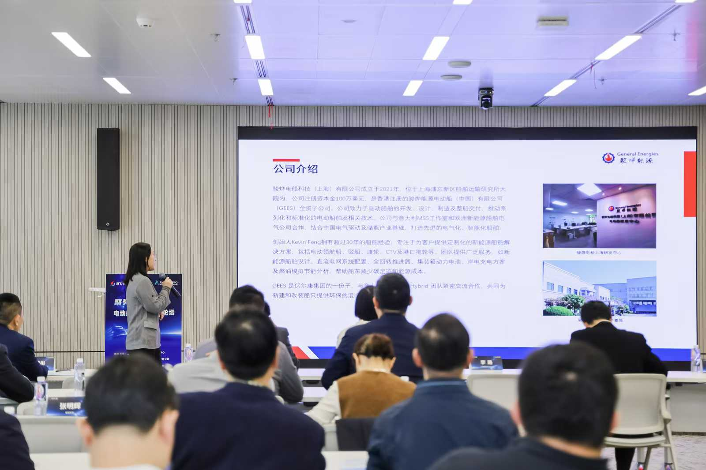
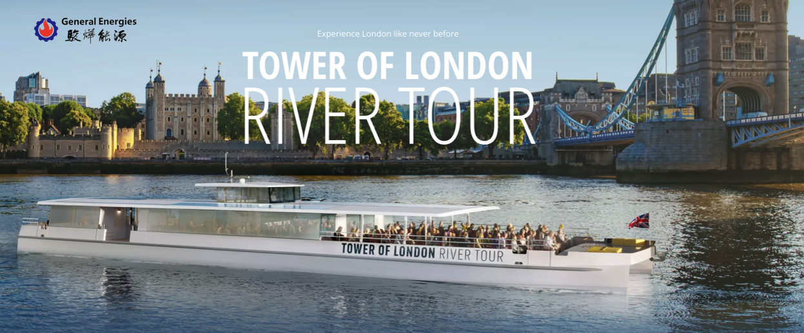

Forum Overview
On October 23, the “Empowering the Electric Vessel Industry Chain Forum” was successfully held at the Zhangjiang Moli Community in Pudong, Shanghai. The event focused on the theme of “Driving Collaborative Innovation in the Electric Smart Ship Industry and Promoting Green and Low-Carbon Shipping”. Representatives from government agencies, research institutions, and industry enterprises gathered to explore cooperation opportunities and discuss pathways for the industry’s sustainable development.
The forum was guided by the Pudong Shipping Development Promotion Center and jointly organized by the AI+ Marine Innovation Center and Stari Marine Engineering Services Co., Ltd., with support from China Intelligent Ship Innovation Alliance and China Shipbuilding Industry Association Smart Ship Branch.
GEES Participation and Presentation
Ms. Hu Anqi, Sales Director of GEES (General Energies Electric Ship), was invited to attend the forum and deliver a presentation titled “Chinese Electric Vessel Technology Sailing Global”. She shared the company’s successful experience in providing a complete electric propulsion system for the Silver Raven—the UK’s first fully electric luxury tourist vessel operating on the River Thames.

Her presentation highlighted GEES’s integrated solutions for electric propulsion, energy management, and control systems, and how the company’s technology has been successfully adopted in international markets through collaboration with Vulkan Hybrid (Italy) and EST Floattech (Netherlands). She emphasized that GEES is committed to promoting zero-emission vessels and advancing the global transition to clean maritime energy.
Key Highlights from the Presentation
- Silver Raven Project: The UK’s first all-electric river cruise vessel, featuring GEES’s GCS (General Control System) with dual 165kW propulsion motors and 720kWh battery packs.
- Smart Control & Energy Management: Integration of Propulsion Control System (PCS) and Energy Management System (EMS) enabling real-time power optimization and zero-emission operation.
- Hybrid System Expertise: GEES demonstrated its serial and parallel hybrid propulsion architectures, supporting flexible energy modes for urban ferries, pilot boats, and cargo vessels.
- “Made in China, Sailing Worldwide”: The Silver Raven system was developed and manufactured in China, tested in Italy, and commissioned in the UK, showcasing the global strength of China’s electric ship industry.

Industry Collaboration and Outlook
The forum served as a key platform to foster cross-sector collaboration across the electric vessel value chain. Participants from shipyards, component suppliers, research organizations, and startups shared innovative cases and technical solutions. The event achieved consensus on strengthening industry cooperation and accelerating electrification, digitalization, and intelligence in marine transportation.
GEES reaffirmed its commitment to supporting China’s dual-carbon goals and promoting the electrification of inland and coastal vessels. The company aims to continue its role as a global pioneer in green marine propulsion systems.
About GEES
GEES (General Energies Electric Ship Co., Ltd.) is a subsidiary of General Energies Group based in Hong Kong, specializing in the design, manufacture, and integration of electric and hybrid propulsion systems. GEES operates R&D centers in Shanghai and production facilities in Wuxi, providing complete solutions for pilot boats, ferries, CTVs, and tugboats. The company collaborates closely with international partners including Vulkan Hybrid and EST Floattech to develop advanced zero-emission marine technologies.